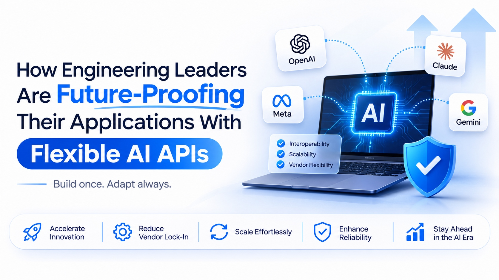

How Engineering Leaders Are Future-Proofing Their Applications With Flexible AI APIs

The model that is best for your product today may not be best next quarter. Prices drop, new models launch, limits change, and providers have outages. Teams that wired one vendor deep into their code feel each of those changes as a rewrite. Teams that put a flexible API layer in between feel them as a configuration change.
01The Cost of Tight Coupling
When application code calls a vendor's SDK directly, the vendor's request format, error types, rate limits, and quirks spread through the codebase. Changing providers then means touching every feature that uses AI, retesting prompts, and rebuilding monitoring.
- Lock-in: Switching is expensive, so pricing power moves to the vendor.
- Fragility: One provider outage becomes your outage.
- Slow adoption: A better model sits unused because trying it needs engineering work.
- Scattered controls: Keys, logging, and redaction are handled differently in each service.
02The Gateway Pattern
The answer most engineering leaders reach is a single internal gateway. Applications talk to the gateway. The gateway talks to providers. This is the idea behind multi-model LLM API orchestration, where requests are routed to the right model through one stable interface.
Application services
|
AI Gateway (one contract, auth, policy, logging, cost)
/ | \
Model A Model B Model C (hosted, open, or self-run)03One Contract, Many Models
Define your own request and response shape and map each provider to it. Applications ask for a capability, not for a vendor.
POST /v1/generate
{
"task": "summarize",
"tier": "balanced",
"input": "...",
"max_cost": 0.02,
"data_class": "internal"
}The gateway chooses the model for that task, tier, cost ceiling, and data class. Changing the choice later needs no change in the calling service.
04Routing and Fallback
| Strategy | How it works | Benefit |
|---|---|---|
| Task-based routing | Send simple tasks to small, cheap models and hard ones to stronger models | Lower cost per task |
| Fallback chain | Retry on another provider after a timeout, error, or rate limit | Higher availability |
| Data-class rules | Keep sensitive requests on approved or self-hosted models | Compliance control |
| Canary and shadow | Send a small share, or a silent copy, of traffic to a new model | Safe evaluation |
| Budget limits | Cap spend per team, feature, or tenant | Predictable cost |
05Security and Governance
A gateway gives you one place to enforce rules that are hard to enforce across many services.
- Provider keys live in the gateway, never in application code
- Prompts and outputs are logged with redaction of sensitive fields
- Per-team access and rate limits are enforced centrally
- Requests carry user and tenant identity for audit
- Provider data handling terms are reviewed and recorded
06Decisions for Leaders
- Build or buy the gateway? Weigh control and customization against time to value and upkeep.
- Which tasks need the strongest model? Most do not. Tier them.
- What must stay in-house? Classify data and set model rules per class.
- How will you evaluate models? Keep a fixed test set so comparisons are fair.
- Who owns it? Assign a team accountable for reliability, cost, and policy.
07Migration Path
- Inventory. List every place the code calls an AI provider.
- Introduce the contract. Define the internal request and response shape.
- Wrap one provider. Route existing traffic through the gateway with no behavior change.
- Move services over. Migrate feature by feature, with the same test set before and after.
- Add a second model. Prove the swap works, then enable routing and fallback.
08FAQs
What is a flexible AI API layer?
It is an internal gateway that gives applications one stable interface for AI, while routing requests to different models and providers behind the scenes.
Does a gateway add latency?
A well-built gateway adds a small overhead. Fallback and routing often improve overall latency and reliability, so measure it in your own environment.
Can we still use provider-specific features?
Yes, through optional extension fields, but each one increases coupling. Use them only where the value is clear.
Should we build our own gateway?
It depends on your scale, compliance needs, and team capacity. Evaluate existing options and your own requirements before committing.
How do we compare models fairly?
Keep a fixed set of real examples, score outputs consistently, and track cost and latency alongside quality.
09Conclusion
Future-proofing AI is less about picking the winning model and more about making the choice reversible. A flexible API layer turns model changes from rewrites into decisions, and it gives leaders one place to manage cost, reliability, and risk.